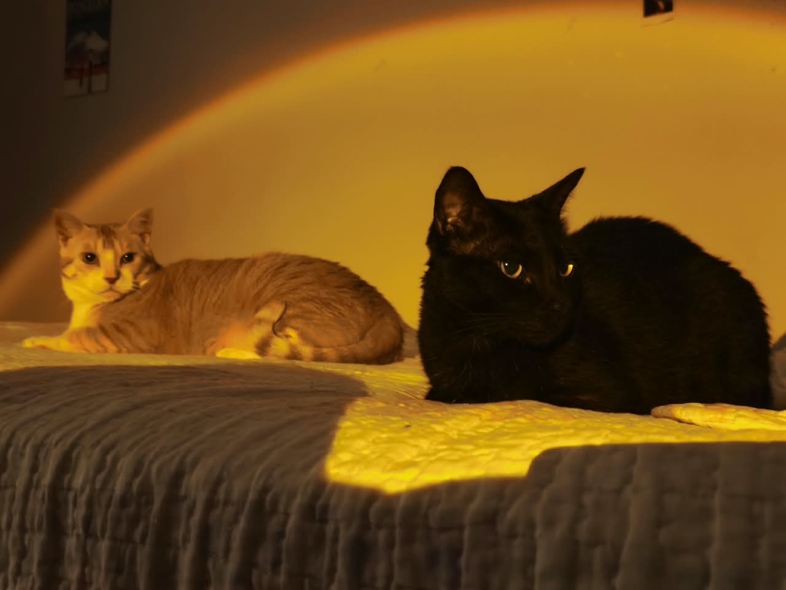

WELCOME!!!




| music | my chemical romance & solo works, melanie martinez, muse, avanged sevenfold, type o negative, westkust, jazmin bean, garden psychedelia, sign steelers, pusher174, ghost, korn, linkin park, rita lee, mitski, ls dunes, destroy boys, alice in chains, leathermouth, self, michael jackson, deftones, paramore, system of a down, ptv, pitty, the hives, crystal castles, pinkpantheress, green day, h.i.m, garbage, tv girl, lil peep |
| games | minecraft, stardew valley, baldurs gate 3, transformice, growtopia, cs2, lol, the sims, animal crossing, overwatch, rhythm heaven, keep driving, project zomboid, skate., needy girl overdose, oxygen not included (I'm terrible) cult of the lamb, nintendogs, tomodachi life, cooking mama, |
| hobbies i've had | drawing, games, photography, webdesign, live2d animation, quad skating, reading, painting (acrylic and watercolor), wool felting, kung fu (miss it!), |
| movies and series | attack on titan, the x files, studio ghibli, matrix, steven universe, south park, twilight, poor things, arcane, the haunting series, black mirror, yuri on ice, my little pony, the orphan, edward scissorhands, hellraiser, gone girl, e.t, hannibal, fleabag, nope, pluribus, severence, rick n morty, solar opposites, interstellar, mickey 17, the lovely bones, death note |
| foods | chocolate, cinnamon tea, nerds candy!!!!, avocado smoothie, italian food, VEGAN FOOD FROM A SPECIFIC RESTAURANT WHERE I LIVE, carrot, cinnamon candy and gum, carbonara without bacon, milk with coffee and chocolate drink, strawberry jam, strawberries with chocolate, hummus, mashed potatoes, ice cream, pasta with tomato sauce and pesto, syrian-lebanese cuisine |
| kins | fluttershy twilight (mlp), lapis lazuli (steven universe), jinx, vex, |
| ships | frerard, eruri, bloodweave, vikturi, reibert, eremika, timebomb, jayvik, |
| colors | black, gray, brown, red, dark and low saturation tones |
| smells | rain, herbs, ocean, home, my cats' bellies, my boyfriend, chocolate, cinnamon, matches |
| actors/actresses/artists | rebeca sugar, kristen stewart, keanu reeves, mads mikkelsen, sophie tatcher, robert pattinson, gillian anderson, evan peters, |
| characters | levi ackerman, erwin smith, mikasa, scully and mulder, fluttershy rainbowdash derpy and pfudor, chococat (sanrio), butters, wendy and the goths (south park), chloe price and kate, legoshi, darwin watterson, lapis and pearl blue pearl, mimikyu litwick/chandelier/chandelure, saeran and saeyoung choi |
| people have said i look like: | rita lee, billie eilish (when i was younger), doarda, alice (twilight), pain (naruto) |
my first contact with the internet was through social media (orkut, facebook) games (like pet mania, simcity, hayday), and flash games, like club penguin, transformice, habbo, and also the sims!! when i was little, i didn't have much access to the wider internet, only to my circle of known people. i have this memory of using a cr4cked disk from my neighbors, with "rosebud" written on it. so, i created my family and built a totally rectangular house, with no room divisions or architectural sense. at some point the kitchen caught fire and i remember just closing the game and never opening it again, because i was afraid my family would die in real life lmao. that sums me up a little,: addiction to gaming/internet and ocd :D although i didn't really live through the tumblr era (i was more into orkut/instagram/twitter), i remember seeing the most beautiful pages and aesthetics on tumblr and always wanting to make one like that, but i only sticked with making an "aesthetically pleasing" or color coordinated instagram feed. around 2024, my boyfriend encouraged me to take some programming courses, and my first steps were through the classics: html and css. i watched some classes from santander academy, ada tech and another sites with borrowed accounts. my first project was a landing page with my main links, like a "linktree", and over time i added more sections, like my 2d animation and photography portfolios; then i discovered neocities and started thinking of ways to help me use less social media (instagram and the deceased twitter, now x), and the psychological impact is quite noticeable. society must be very compromised, considering how much all this is normalized and how even small businesses depend entirely on instagram for promotion. unfortunately, i can't leave completely, because most of my clients are on twitter (i've been there since before it was bought and ruined), and most people i know are on instagram.


{kind=link}
{kind=link}